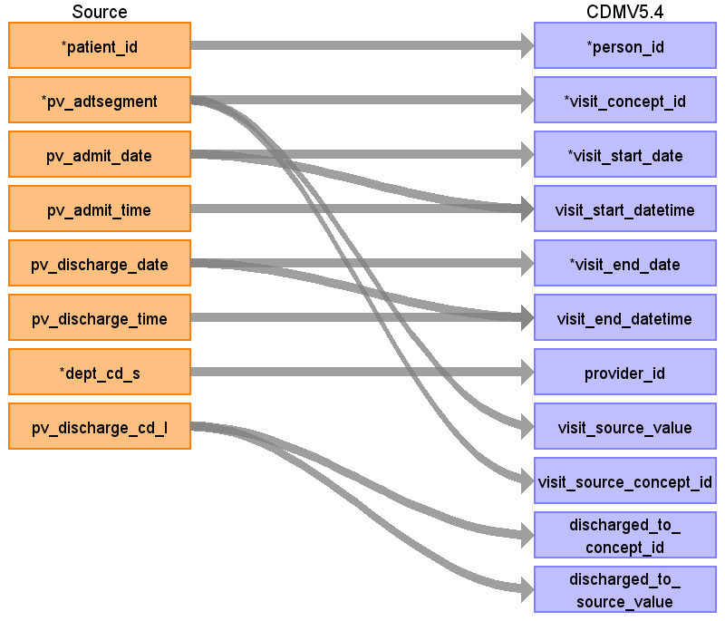

ターゲットテーブル:visit_occurrence
・当テーブルはPatientVisitテーブルから生成する
本項では、PatientVisitをもとに生成された、visit_occurrenceテーブルの各項目のとの出力結果の対応を記載する。
・visit_occurrenceには１外来受診および１入院ごとのレコード作成する。退院イベントがある場合は入院イベントレコードの終了日に反映する。
・PatientVisitに退院実施レコード以前の入院実施レコードが存在しない場合、その入退院イベントレコードは生成しない
・PatientVisitの外来受診、入院実施、退院実施以外のレコード（外出泊、転科転棟）はvisit_detailに登録する
・provider_idには診療科コードに相当する情報を保存し、対象診療科を識別可能とする。

| Destination Field | Source field | Logic | Comment field |
|---|---|---|---|
| visit_occurrence_id | 一意の連番をETL処理で設定する | ||
| person_id | patient_id | person.person_source_valueと結合してperson_idを取得・登録する |
|
| visit_concept_id | pv_adtsegment | stage.source_to_concept_map_f を以下の条件参照
VocabID:RINCHU_VIST DomainID:Visit |
ADTセグメント識別子をもとに、以下のイベントに該当するVisitのStandard Vocabularyに変換する
外来診察の受付：ADT^A04^ADT_A01 →9202: Outpatient Visit 入院実施：ADT^A01^ADT_A01 →9201: Inpatient Visit 退院実施 ：ADT^A03^ADT_A03 →（入院のイベントレコードに集約するため対象外） 転科・転棟実施：ADT^A02^ADT_A02 →（Visit_occurrence対象外） 外出泊実施：ADT^A21^ADT_A21 →（Visit_occurrence対象外） 外出泊帰院実施：ADT^A22^ADT_A21 →（Visit_occurrence対象外） |
| visit_start_date | pv_admit_date | TO_DATE(visit_start_date, 'YYYYMMDD') AS visit_start_date | 外来受診入院実施日（外来受診の場合は来院日時の日付、入院の場合は入院日時の日付）をそのまま登録する |
| visit_start_datetime | pv_admit_date pv_admit_time |
CASE
WHEN visit_start_time = '999999' THEN TO_TIMESTAMP(visit_start_date || '000000','YYYYMMDDHH24MISS') ELSE TO_TIMESTAMP(visit_start_date || visit_start_time,'YYYYMMDDHH24MISS') END AS visit_start_datetime |
外来受診入院実施日と外来受診入院実施時刻を連結して登録する |
| visit_end_date | pv_discharge_date | CASE
WHEN visit_end_date IS NULL THEN TO_DATE('99991231', 'YYYYMMDD') ELSE TO_DATE(visit_end_date, 'YYYYMMDD') END AS visit_end_date |
|
| visit_end_datetime | pv_discharge_date pv_discharge_time |
CASE
WHEN visit_end_date IS NULL THEN TO_TIMESTAMP('99991231' || '000000','YYYYMMDDHH24MISS') ELSE CASE WHEN visit_end_time IS NULL THEN TO_TIMESTAMP(visit_end_date || '000000','YYYYMMDDHH24MISS') WHEN visit_end_time = '999999' THEN TO_TIMESTAMP(visit_end_date || '000000','YYYYMMDDHH24MISS') ELSE TO_TIMESTAMP(visit_end_date || visit_end_time,'YYYYMMDDHH24MISS') END END AS visit_end_datetime |
PV_ADTSEGMENT='ADT^A01^ADT_A01'(入院実施)に続く’退院実施 ：ADT^A03^ADT_A03’(退院実施)のレコードがあれば、そのレコードの退院実施日と退院実施時刻をそのまま登録する |
| visit_type_concept_id | 32817（EHR）固定とする | ||
| provider_id | dept_cd_s | 当該標準診療科コードを示すprovider_idを取得して登録する |
|
| care_site_id | 当該医療機関を示すcare_site_idを固定で登録する | ||
| visit_source_value | pv_adtsegment | ADTセグメント識別子をそのまま登録する |
|
| visit_source_concept_id | pv_adtsegment | visit_concept_idと同じ値を登録する |
|
| admitted_from_concept_id | （設定しない） | ||
| admitted_from_source_value | （設定しない） | ||
| discharged_to_concept_id | pv_discharge_cd_l | stage.source_to_concept_map_f を以下の条件参照
VocabID:RINCHU_VIST DomainID:Visit |
退院区分に対応するstandard conceptに変換して登録する |
| discharged_to_source_value | pv_discharge_cd_l | 退院区分をそのまま登録する。 |
|
| preceding_visit_occurrence_id | （設定しない） |